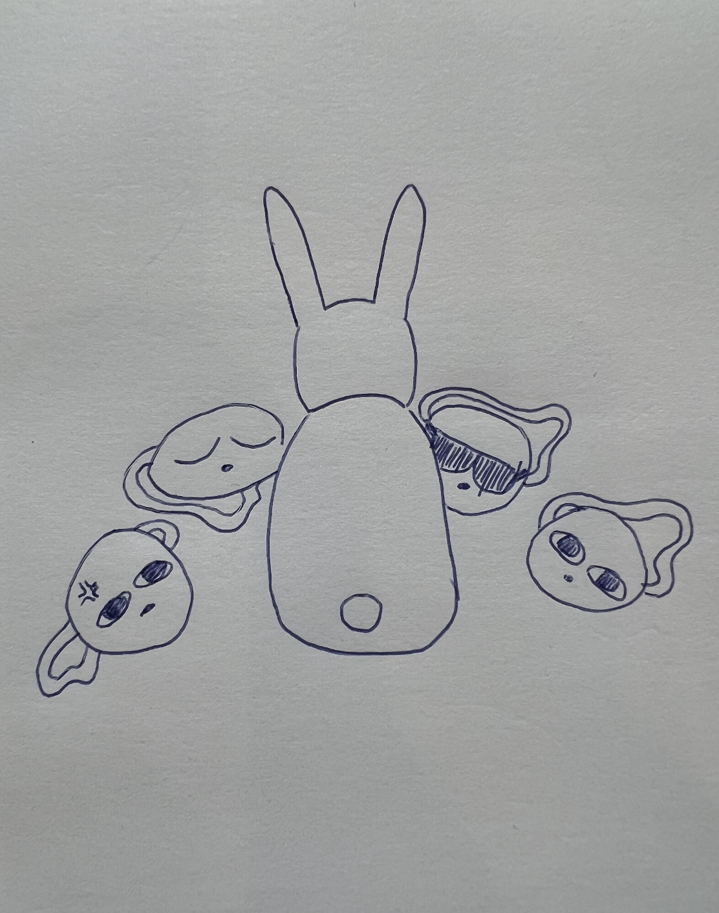
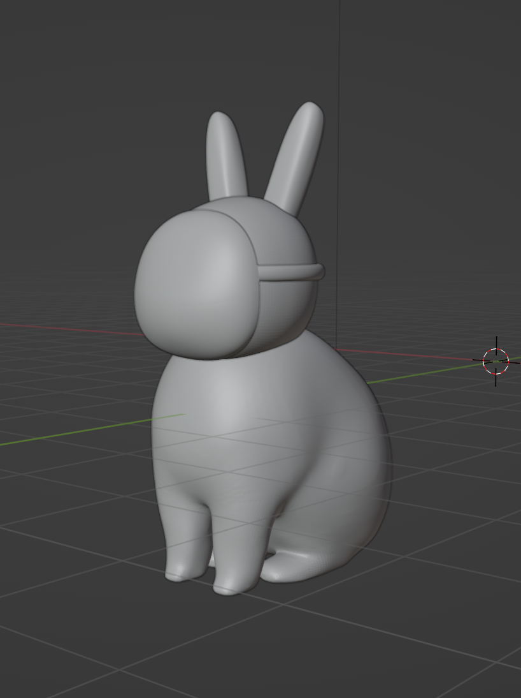
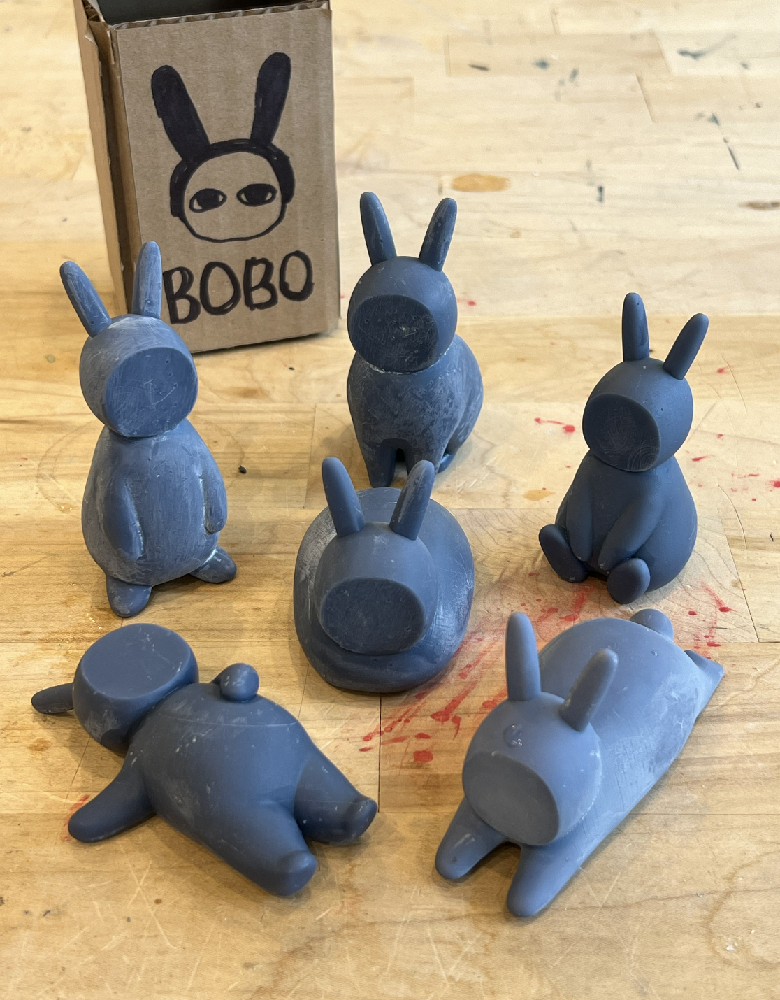
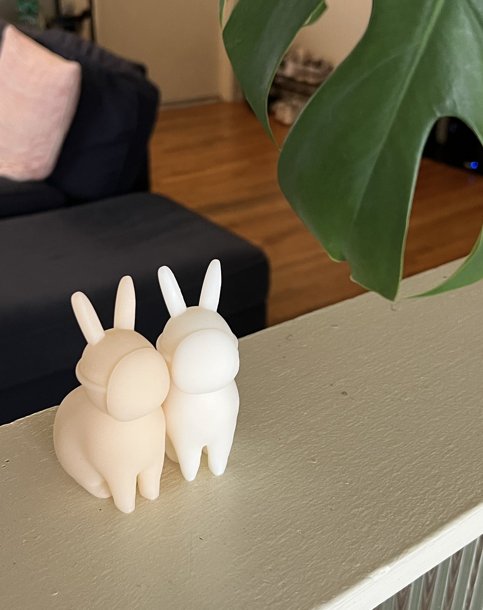
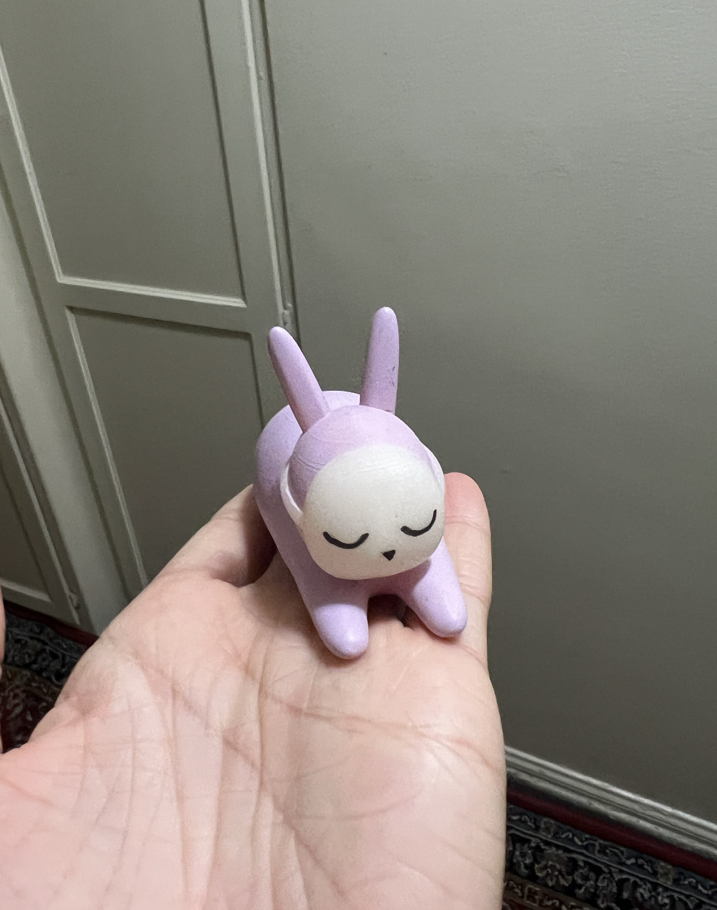
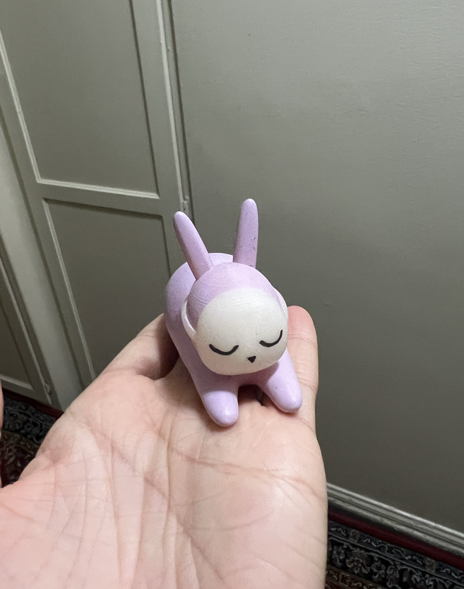

3D Modelling
Inspired by Japanese Gachapon blind boxes, I created and modelled my original character, Bobotan, using Blender. I prototyped the models by printing them with PLA filament 3D printers, then printed the final versions with a resin printer. The series includes Bobotan in 6 different poses.
Bobotan is a mysterious bunny who is always seen wearning a mask.



 
